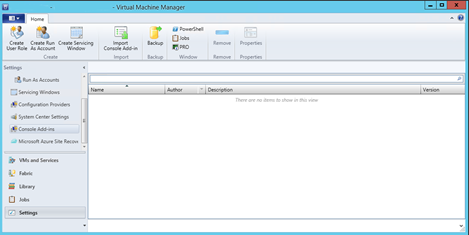
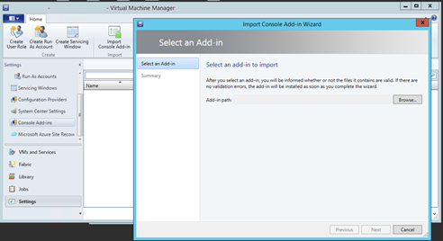
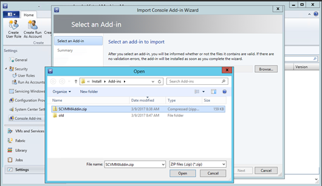
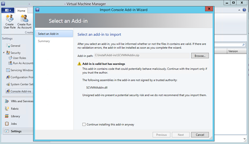
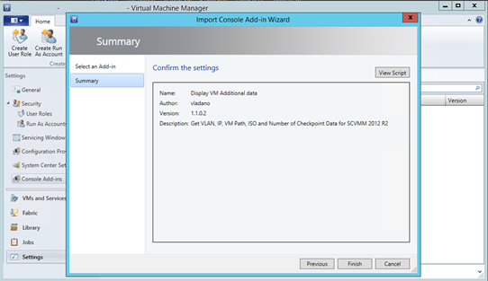

SCVMM Add-In
<!-- If the browser does not support frames put the first topic content here --> <div class="WordSection1"> <h1 align="center" style= 'margin-top:0cm;text-align:center;line-height:normal'><a name= "node0" id="node0"></a>Screenshots - How to install Add-In inside SCVMM 2012 R2 console</h1> <p class="MsoNormal" style= 'margin-bottom:0cm;margin-bottom:.0001pt;line-height: normal'>Start SCVMM console as user who has admin rights.</p> <p class="MsoNormal" style= 'margin-bottom:0cm;margin-bottom:.0001pt;line-height: normal'>Go to Setings -> Console Add-ins.</p> <p class="MsoNormal" align="center" style= 'margin-bottom:0cm;margin-bottom:.0001pt; text-align:center;line-height:normal'> </p> <p class="MsoNormal" style= 'margin-bottom:0cm;margin-bottom:.0001pt;line-height: normal'>Click on button „Import Console Add-in“ inside toolbar.</p> <p class="MsoNormal" align="center" style= 'margin-bottom:0cm;margin-bottom:.0001pt; text-align:center;line-height:normal'> </p> <p class="MsoNormal" style= 'margin-bottom:0cm;margin-bottom:.0001pt;line-height: normal'>Click Browse button and navigate to folder where you previously copied SCVMM Add-in file SCVMMAddin.zip.</p> <p class="MsoNormal" align="center" style= 'margin-bottom:0cm;margin-bottom:.0001pt; text-align:center;line-height:normal'> </p> <p class="MsoNormal" style= 'margin-bottom:0cm;margin-bottom:.0001pt;line-height: normal'>Then select that file and click Open.</p> <p class="MsoNormal" style= 'margin-bottom:0cm;margin-bottom:.0001pt;line-height: normal'>You will get next picture screen.</p> <p class="MsoNormal" align="center" style= 'margin-bottom:0cm;margin-bottom:.0001pt; text-align:center;line-height:normal'> </p> <p class="MsoNormal" align="center" style= 'margin-bottom:0cm;margin-bottom:.0001pt; text-align:center;line-height:normal'> </p> <p class="MsoNormal" style= 'margin-bottom:0cm;margin-bottom:.0001pt;line-height: normal'>Click on checkbox at the bootom of shown application dialog.</p> <p class="MsoNormal" align="center" style= 'margin-bottom:0cm;margin-bottom:.0001pt; text-align:center;line-height:normal'> <img width="524" height="302" id="Picture 6" src= "SCVMMAddin_files/image005.png" alt="image" name="Picture 6" /></p> <p class="MsoNormal" style= 'margin-bottom:0cm;margin-bottom:.0001pt;line-height: normal'>Click Next button.</p> <p class="MsoNormal" align="center" style= 'margin-bottom:0cm;margin-bottom:.0001pt; text-align:center;line-height:normal'> </p> <p class="MsoNormal" style= 'margin-bottom:0cm;margin-bottom:.0001pt;line-height: normal'>Click Finish button.</p> <p class="MsoNormal" style= 'margin-bottom:0cm;margin-bottom:.0001pt;line-height: normal'>After Add-in sucessfuly imported inside SCVMM console, you will see picture below.</p> <p class="MsoNormal" align="center" style= 'margin-bottom:0cm;margin-bottom:.0001pt; text-align:center;line-height:normal'> </p> <p class="MsoNormal" align="center" style= 'margin-bottom:0cm;margin-bottom:.0001pt; text-align:center;line-height:normal'> </p> </div>
Contents
Topics
Search
Screenshots - How to install Add-In inside SCVMM 2012 R2 console
SCVMM 2012 R2 console with installed Add-In
Screenshots - How to install Add-In inside SCVMM 2012 R2 console
SCVMM 2012 R2 console with installed Add-In
Generated with
chmProcessor


 Generated with
chmProcessor
Generated with
chmProcessor